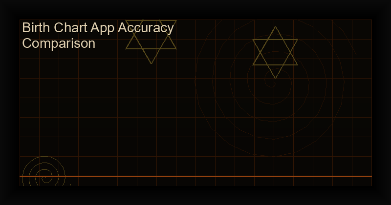

Birth chart apps: how to tell which one is actually right for your chart
Table of Contents
What a birth chart actually is
A birth chart is a diagram of the sky at one moment, at one place. Four things define it, and every birth chart app is making four decisions that can be right or wrong:
- The instant. The exact moment, in universal time, with the timezone and the daylight saving rule of the birth place applied correctly.
- The positions. Where the planets were, computed from an ephemeris.
- The frame. Which zodiac, and which ayanamsa if it is sidereal.
- The division. Which house system, which turns the sky into twelve parts.
Two apps that disagree are almost always disagreeing about the first or the fourth. The second and the third are settled questions with documented answers, and you can check them.
The four questions that decide whether an app is any good
Any comparison of birth chart apps that does not cover these four is decorative. A list of features tells you what an app does, and the four questions tell you whether you can trust what it tells you.
Question 1: accuracy, and what accuracy is worth
Accuracy here means one thing: how close the computed position is to the true position. The useful unit is the arcminute, and the useful conversion is this one: one arcminute of longitude is about four seconds of birth time, because the Ascendant moves roughly a quarter of a degree for every minute that passes.
So a difference of one arcminute between two apps can put a planet in a different house, if that planet happens to sit within an arcminute of a cusp. A difference of one arcsecond cannot do anything to a chart at all.
Both the popular astrology ephemeris and the astronomy standard are in the arcsecond class when implemented in full, and the difference between them is not what makes two apps disagree. The ephemeris comparison covers the series, the licences and the method for checking a position yourself.
Question 2: the birth time, which no app can fix
This is where the errors actually live, and no amount of ephemeris precision touches it.
- The timezone. A birth time recorded in local time has to be converted with the offset that was in force on that date in that place, including any daylight saving rule that applied then and not now.
- Daylight saving. One hour of error moves the Ascendant about 15 degrees. That is a different chart.
- The missing time. When a birth time is unknown, a program has to assume something, and the most common assumption is noon. Noon is rarely right, and it moves the Ascendant by up to 90 degrees depending on where the year falls. Some programs quietly default to it without saying so, which is the single worst behaviour in this category.
- Coordinates. Entering a city name instead of coordinates puts the Ascendant in the right neighbourhood, and the houses in the wrong one, because the ascendant moves about one degree for every four minutes of latitude near the extremes.
The rule to hold: if an app lets you enter coordinates, enter coordinates. If it does not tell you what it assumed about the time, it is not telling you enough.
Question 3: the house system, where the apps differ most
The planets are the same in every app. The houses are where the disagreement lives, and the differences are large: a planet can sit in the ninth house in one program and the tenth in another, for a perfectly ordinary birth time.
There are four systems in regular use, and the choice is not a matter of correctness. Whole sign and equal house are the well-behaved ones, and they are what you want above the Arctic Circle, where Placidus stops producing sensible results. Placidus is the Western default. Koch differs from Placidus in the higher degrees. Porphyry is the Hellenistic standard and stays sensible at high latitudes.
The guide to house systems and ayanamsas goes through what each one does and where it breaks.
Question 4: the zodiac, and why it is the least important
Most apps let you choose tropical or sidereal. It is the least consequential of the four decisions, because the ayanamsa rotates the whole frame: the positions are the same, the aspects are the same, and what changes is the sign label and, through it, the house placement.
If two apps give you different signs for the same planet and the same time, that is the ayanamsa and it is expected. If they give you different positions, that is a bug or a time problem. Knowing which is which saves an argument.
The options, and what each one is for
Three kinds of option, and they are not rivals:
| Kind | What it is good for | What to watch |
|---|---|---|
| Free web tools | Finding your sun sign, checking a moon phase, seeing what a chart looks like | Usually one calculation, a default house system, and no way to choose the zodiac |
| Paid Android apps | A full chart you own, on the device, with no account and no tracking | Check what the app says about birth time assumptions, and whether it can export the data |
| Professional software | Rectification, secondary progressions, heliacal work, a hundred years of ephemeris | Subscription, an account, and a learning curve that is real |
For most people the second row is the right one: a paid app that computes the chart on the device, stores it locally and costs a single purchase is both cheaper and more private than a subscription, and it does the same arithmetic.
Our own comparison of the Android options, with the prices and listing states read from the Play Store on 21 October 2026, is here, including the disclosure that two of the apps in it are ours.
How to check any birth chart app in ten minutes
This works on any app, including the one you made, and including the paid one.
- Enter a birth time you are certain about. Use a public figure whose time is documented, so you can compare against a printed ephemeris.
- Write down the Sun, Moon and Ascendant degrees and minutes, not just the signs.
- Check the Moon against a reference. The Moon moves the most, so it is the most sensitive test. The Astronomical Almanac and the Horizons interface both give an independent value for the same instant.
- Check the Ascendant against the same reference, with the latitude and longitude of the place, and with the same house system.
- Now change the house system and see the cusps move. The planets should not move at all. If they do, the app is recomputing something it should not, and that is worth knowing before you rely on it.
Expect agreement within a few arcseconds on the Moon and a couple of arcseconds on the inner planets. If you are seeing a discrepancy of degrees, it is the time, not the ephemeris, and step two above will find it in a minute.
When the birth time itself is wrong
Some percentage of birth times are wrong, missing, or recorded in a different zone. No app can repair that, and any program that offers to will be guessing.
What can be done is narrower and still useful. A birth time can be rectified: you test candidate times against the known events of a life and see which one fits the pattern better. It is a real technique with a real literature, it is time-consuming, and it is a separate discipline from computing a chart. It is also the point at which the more elaborate professional software starts to earn its price, because rectification is easier with a hundred years of ephemeris and a house system you can change on the fly.
For everyone else, the honest approach is to compute the chart with the best time available, and to treat the parts of the chart that depend most on the time, the Ascendant and the house placements, as provisional. The Sun changes by about a degree a day and is nearly time-independent. The Moon changes by half a degree an hour and is not.
FAQ
Which birth chart app is the most accurate?
The question is not well posed until you separate the four decisions. The positions are settled and every competent app gets them right to within an arcsecond. What differs between apps is the time handling, the house system and the zodiac, and those are choices rather than accuracies. Check the positions yourself with the method above, and pick on the house system and the privacy.
Is there a free birth chart app that is actually good?
For a first look, yes: the free web tools on this site compute a chart with a stated house system, and they are enough to understand what a chart contains. For a chart you keep, with the time handled properly, the choices narrow down quickly.
What is the difference between an astrology app and a professional program?
Mostly ephemeris depth and the house systems on offer, and the ability to rectify. If you want transits, progressions and a hundred years of data, the professional programs earn their cost. If you want your own chart, calculated on your device, with nothing sent anywhere, a one-off purchase app is enough for most people.
Does the chart change if I change the house system?
The house placements change, sometimes by a whole house. The planet positions do not change at all, and neither do the aspects. If a program changes the planet positions when you switch house systems, it has a bug.
References and further reading
- NASA JPL versus Swiss Ephemeris: the accuracy question in full, with the method for checking a position against Horizons.
- Tropical versus sidereal, the ayanamsa and the house systems.
- Birth chart for beginners: what the parts of a chart are for.
- The Android comparison, with the Play Store data read on 21 October 2026 and our disclosure.
Related Resources
Your own chart, on your device
Astral Lab computes the chart with VSOP87 and ELP-2000 precision, lets you choose the house system, and keeps everything local. No account, no tracking, $6.99 once.
Discussion & Comments
Tried this practice? Tell us what happened below. Reader results are the most useful feedback we get — they show other practitioners what to expect and tell us which guides to write next.